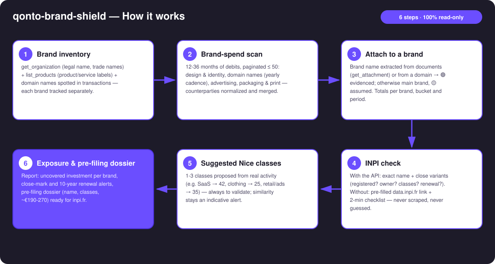
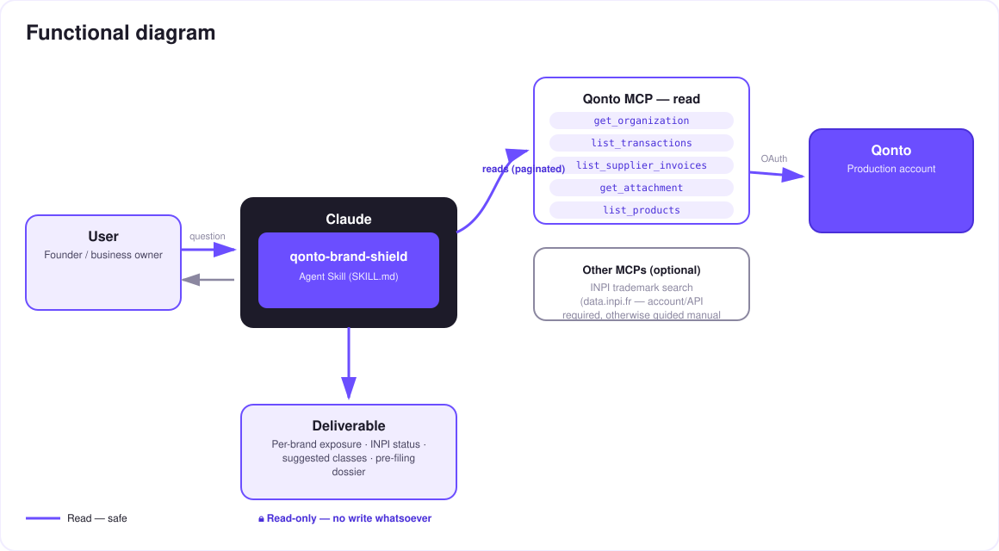

Is the brand you're funding actually protected? — your Qonto account's brand exposure, in numbers.
Every month, the account pays for things that build a brand: a logo, domain names, ad campaigns, packaging. Meanwhile, nobody checks whether the name itself is protected. The skill does both:
Design/logo, domains, advertising, packaging, print — detected in real expenses: "you invested €X in brand [Name]", attachments tagged 🟢🟡.
Registered? By you? Close marks in your classes? 10-year renewal near? With the API, or a guided 2-minute manual check.
The "uncovered" investment: everything already spent on a name that nothing protects.
Name, Nice classes suggested from real activity, indicative cost (~€190–270 for 1–3 classes), ready for inpi.fr.
Would someone use this on a Monday morning? It's the check every founder postpones — one question, one number, one €190–270 decision.
Example (invented brand and amounts): "You spent €4,320 over 8 months on the brand Nordlys. It is not registered. A close mark has existed in class 42 since 2021. Filing in 2 classes: ~€230 — about 5 % of what's already invested, unprotected."
| Prerequisite | Detail | Required |
|---|---|---|
| Qonto production account | Adapts to any organization — get_organization first, nothing hardcoded | ✅ |
| Country | Registry: INPI = France. Other Qonto countries (DE, ES, IT…): the financial exposure stays valid everywhere; for the registry side, EUIPO is the lead — registry data is never invented | ℹ️ detected |
| Qonto MCP connected | Official connector (claude.ai / Claude Desktop), OAuth login | ✅ |
| INPI access | The data.inpi.fr API requires an account + an access request. Without it: pre-filled search link + guided manual check (~2 min). No scraping | ⭕ optional |
| ≥ 12 months of history | 24–36 months recommended — yearly cadences (domains) only show across full years | ⭕ |

get_attachment) or from a domain → 🟢; otherwise main brand, tagged 🟡 — never presented as certainlist_supplier_invoices for clean supplier names · masked IBANs
100 % read-only: the skill creates no MCP write — no transfer, no invoice, nothing to approve. The only possible "action", the trademark filing, happens on inpi.fr, decided by the user, after human validation. Trademark similarity is an indicative alert, not legal advice — an IP professional is recommended.
| Bucket | Signals | Example counterparties |
|---|---|---|
| Design & identity | Labels: logo / branding / identity / brand guidelines / naming | Freelance platforms, agencies, independent designers |
| Domain names | Registrars, yearly cadence (cross-ref qonto-subscription-audit) | OVH, Gandi, Namecheap, GoDaddy, IONOS… |
| Advertising | Ad platforms | Google Ads, Meta, TikTok, LinkedIn… |
| Packaging & print | Labels: print / packaging / labels / stickers | Online printers, packaging suppliers |
| Activity detected in the account | Suggested classes (to validate) |
|---|---|
| SaaS / software services | 42 (+9 for downloadable software) |
| Clothing / print-on-demand | 25 |
| Retail, advertising services | 35 |
| Education / content | 41 |
Indicative costs: filing €190 for the first class + €40 per extra class (~€190–270 for 1–3 classes) · renewal every 10 years (~€290 + €40/class) · source of truth: inpi.fr.
| Output | Format | When |
|---|---|---|
| Conversation reply | Markdown tables (investment per brand, status, exposure, alerts) | Always — the baseline |
| Interactive one-pager | HTML file/artifact: exposure gauge, buckets, INPI status, dossier | When the host renders files (claude.ai artifacts, Claude Desktop, Claude Code); automatic fallback to tables |
| Pre-filing dossier | Structured text: name, suggested classes, indicative cost, inpi.fr link | Every unprotected brand detected |
The ≤ 3-minute demo attached to the PR walks through: the problem → the per-brand investment total → the INPI check (the guided manual mode, shown honestly) → the exposure number + the pre-filing dossier. It runs live on a real production account. The detailed shooting script is kept internal (out of the repo).
| Idea | Effort | Note |
|---|---|---|
| Dedicated INPI MCP (data.inpi.fr API integrated) | Medium | Removes the manual step; dynamically detected, the core works without it |
| EUIPO / WIPO extension (EU & international marks) | Medium | Qonto is pan-European; same logic, other registries |
| Watch for new close filings | Medium | The INPI opposition window is short (2 months after publication) — a timely alert matters |
Automatic cross-reference with qonto-subscription-audit | Low | Domains are already detected annual subscriptions |
Renewal deadline pushed into qonto-tax-pilot | Low | The 10-year renewal joins the dated-outflows schedule |